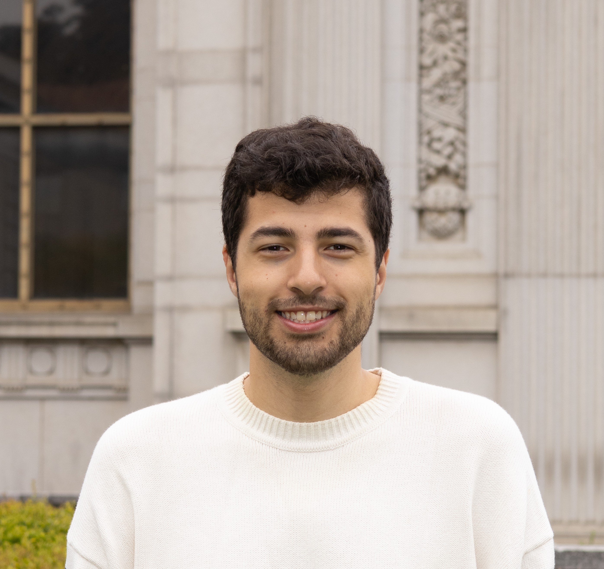

I am a second-year PhD student in Statistics at UC Berkeley and an NSF Graduate Research Fellow.
My research sits at the intersection of causal inference and the theory of modern machine learning. I study what large models can provably learn and compute, and use that understanding to make AI a reliable tool for inference, experimentation, and decision-making.